This is the Music page. It has three sections below, in this order: Current Album, then Discography, then How I Build an Album. The Discography section holds a table of all 20 of my releases, newest first, with eight columns: Artwork, Release, Format, Release Date, Genre, Tracks, Running Time, and Credits. Every release name in the table is a link to that release's own page. The table ends with a single note row that stretches across all eight columns. After the last section you will reach the page footer, which holds my name and my email address.
Current Album
The most current album I'm working on is called Paranoia. The way I produce music is I work on big catalogs of albums, and then hand pick which ones I'd like to distribute.
Discography
Everything I have released so far: 2 albums, 4 EPs, and 14 singles. If you only have time for one thing, start with Fractured tides, the opening track from The tides, or hear a sample of Sensations on its release page.
| Artwork | Release | Format | Release Date | Genre | Tracks | Running Time | Credits |
|---|---|---|---|---|---|---|---|
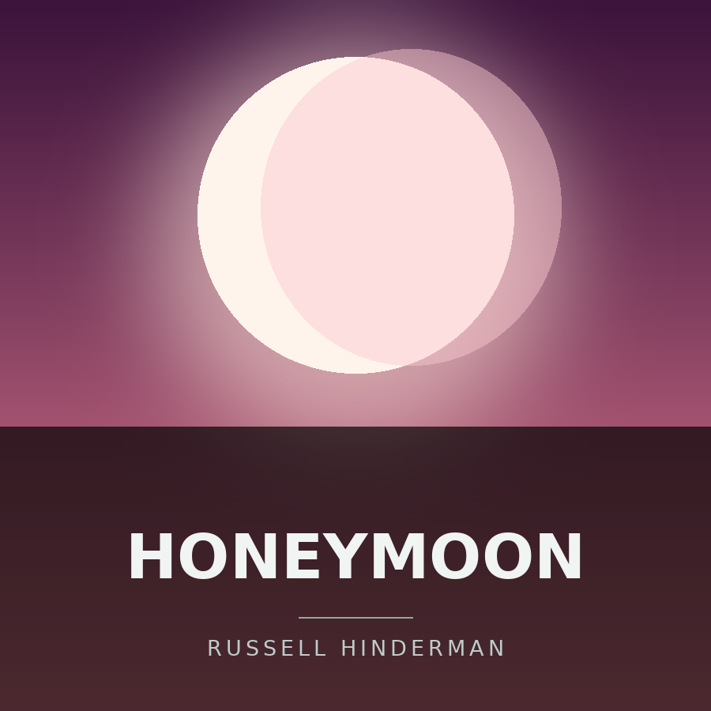 |
Honeymoon | Single | August 10, 2026 | Dance | 1 | 4:29 | Russell Hinderman |
 |
Terms of awareness | EP | August 2, 2026 | Metal | 4 | 18:28 | Russell Hinderman |
 |
The cost of love | Album | July 26, 2026 | Metal | 14 | 1:24:05 | Russell Hinderman |
 |
Nemesis | EP | July 10, 2026 | Metal | 4 | 21:37 | Russell Hinderman |
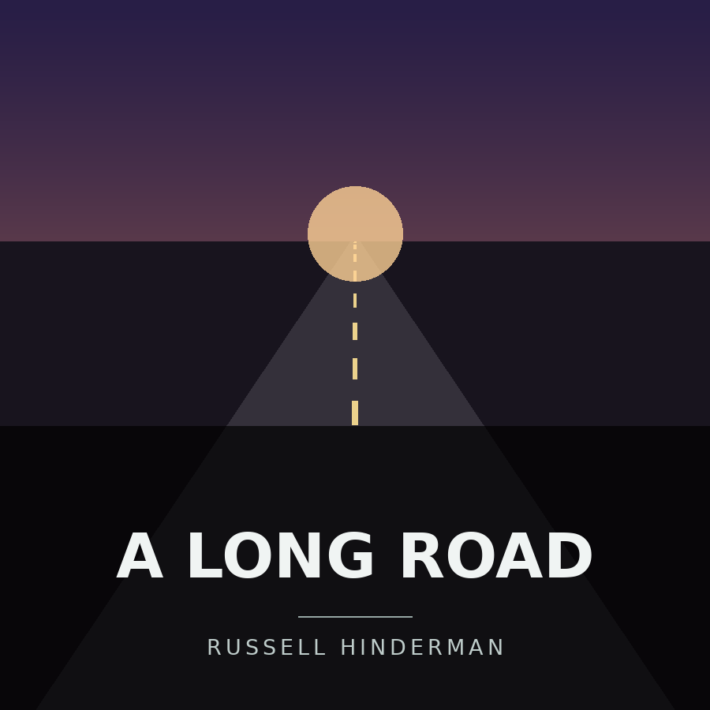 |
A long road | Single | July 6, 2026 | Electronic | 1 | 7:34 | Russell Hinderman |
| Requiem of Valerie | Single | July 1, 2026 | Ambient | 1 | 5:24 | Russell Hinderman | |
| Take a break | EP | June 26, 2026 | Jazz | 4 | 25:29 | Russell Hinderman | |
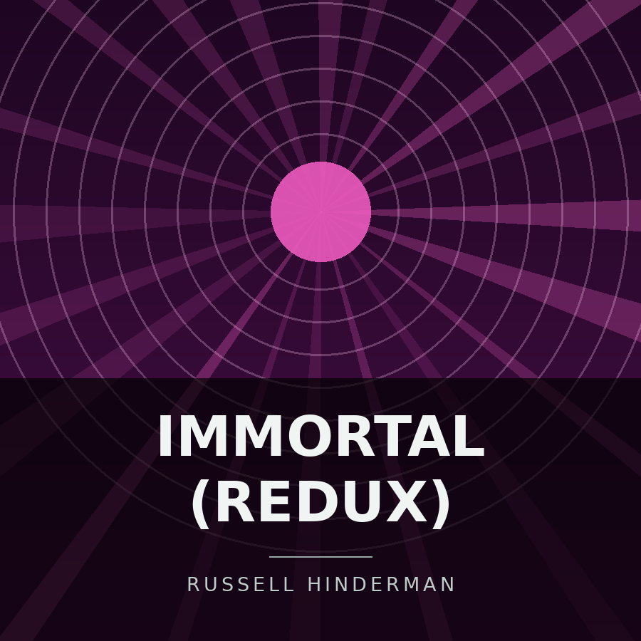 |
immortal (redux) | Single | June 22, 2026 | Dance | 1 | 5:16 | Russell Hinderman |
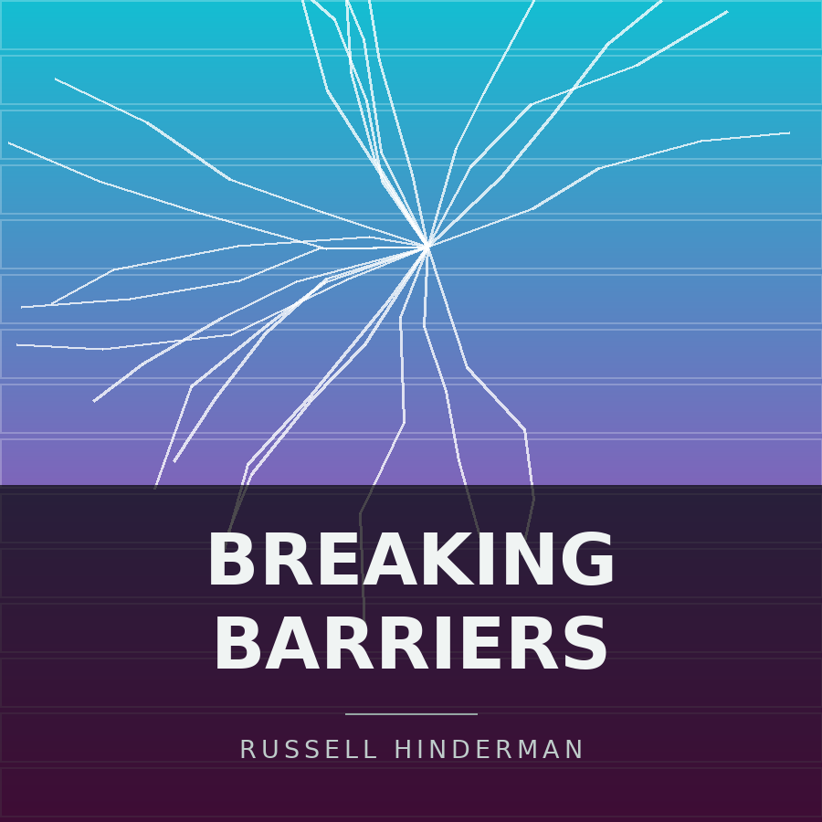 |
Breaking barriers (I feel so alive) | Single | June 15, 2026 | Dance | 1 | 3:23 | Russell Hinderman |
 |
The betrayer of warnings (feat. DJSODAPOP) | Single | June 12, 2026 | Death Metal/Black Metal | 1 | 5:07 | Russell Hinderman, featuring DJSODAPOP; written with Kavuntae Lewiel |
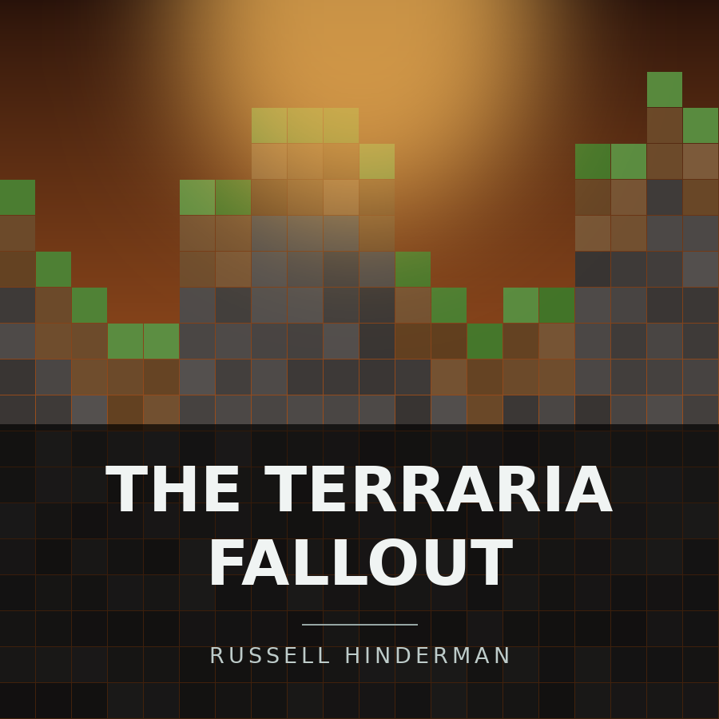 |
The terraria fallout | Single | June 11, 2026 | Dubstep | 1 | 4:18 | Russell Hinderman |
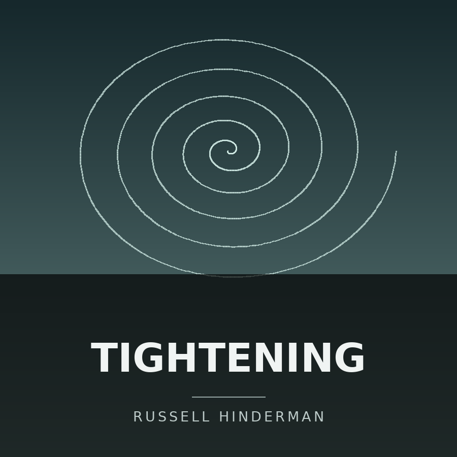 |
Tightening (the forgotten track from sensations) | Single | June 9, 2026 | Ambient | 1 | 2:00 | Russell Hinderman |
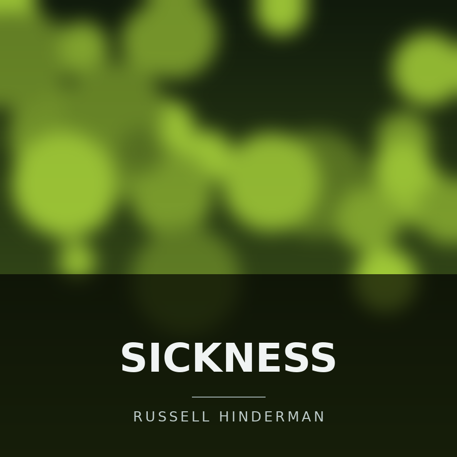 |
Sickness | Single | June 8, 2026 | Dubstep | 1 | 3:03 | Russell Hinderman |
 |
The tides | Single | May 22, 2026 | Metal | 3 | 22:44 | Russell Hinderman |
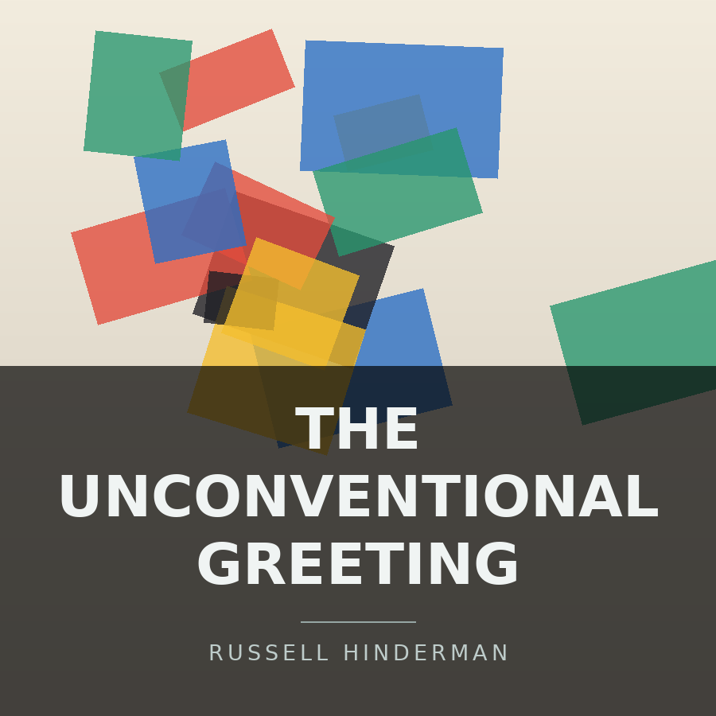 |
The unconventional greeting | Single | April 14, 2026 | Dubstep | 1 | 3:27 | Russell Hinderman |
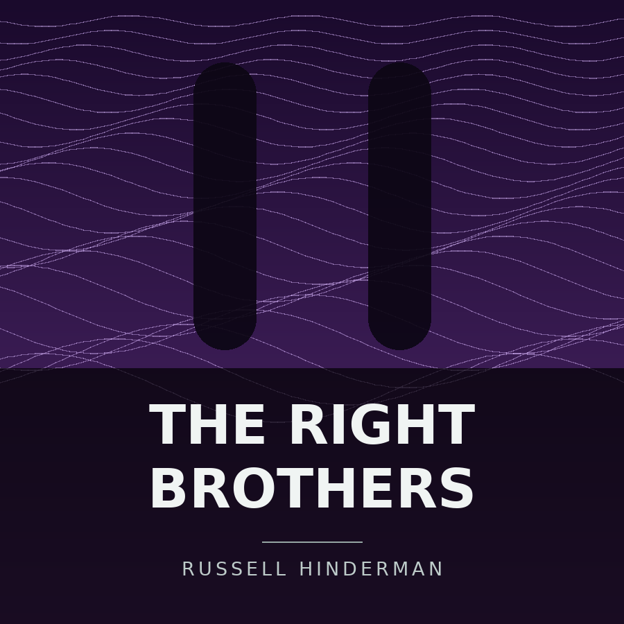 |
The Right Brothers (the feeling of losing your mind) | Single | April 12, 2026 | Dubstep | 1 | 6:00 | Russell Hinderman |
 |
Sensations | Album | March 27, 2026 | Metal | 8 | 46:25 | Russell Hinderman |
 |
Extensive drum set performance with tempo changes and time signature changes at Cloverleaf high school (Freestyle) | EP | March 25, 2026 | Metal | 1 | 19:17 | Russell Hinderman |
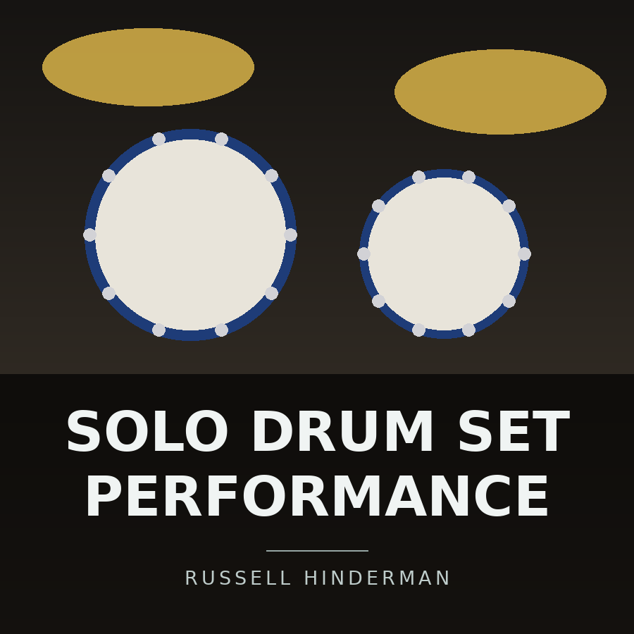 |
Solo drum set performance at Cloverleaf high school | Single | March 22, 2026 | Worldwide | 1 | 7:30 | Russell Hinderman |
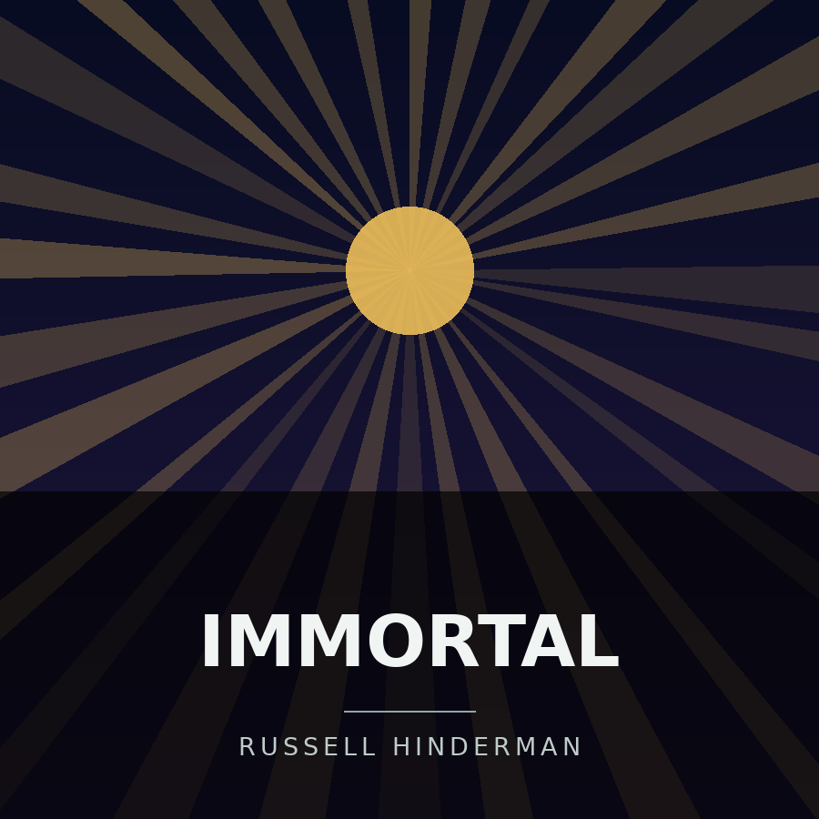 |
Immortal | Single | December 31, 2025 | Dubstep | 1 | 3:36 | Russell Hinderman |
| Select any release name to open its own page, with the full track listing, credits, and links to YouTube Music and Apple Music. | |||||||
How I Build an Album
Every release follows roughly the same path, from the first rough idea to the finished record. The software behind each of these steps is described on the Equipment page.
- Sketch out ideas and build a large catalog of songs.
- Produce the tracks that show the most promise.
- Hand pick the strongest songs for the album.
- Mix and master the final selections.
- Distribute the finished album.